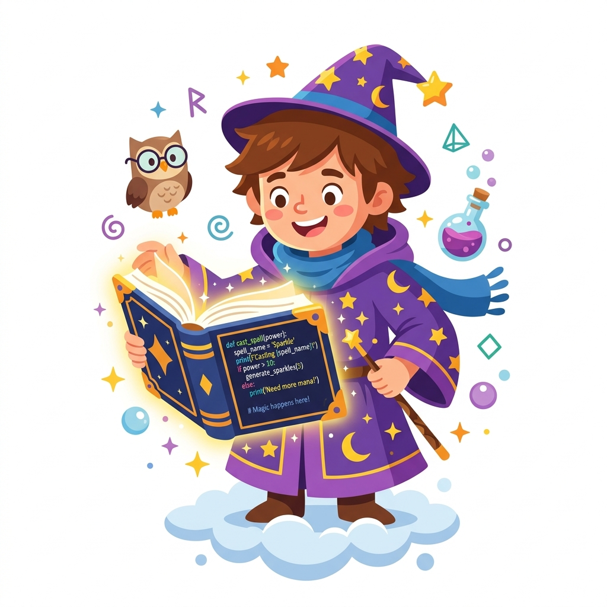

An LLM (Large Language Model) is a massive AI brain that has read almost the entire internet! It can talk to you, write poems, and answer questions. We can talk to them using an API.
Example A: Groq API
# We will use the ultra-fast Groq API!To talk to the API, we use a library (like `requests` or `frok_api`) to send a message over the internet to the AI's server.
Example A: Sending a message
response = api.send("Hello AI!")How you ask the question matters! Prompt Engineering is the skill of giving the AI specific rules and context so it gives you the exact answer you want.
Example A: A bad prompt
api.send("Tell me about dogs.")Example B: A good prompt
api.send("Explain dogs to a 5-year old in exactly 2 sentences.")In the browser, we use JavaScript to securely fetch data from the Groq API! We can call JS functions right from Python in Pyodide!
By putting the API call inside a `while` loop, you can create a continuous conversation with the AI!